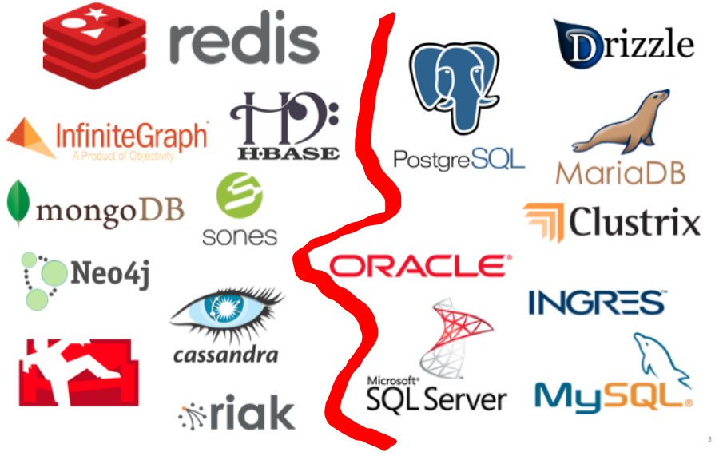
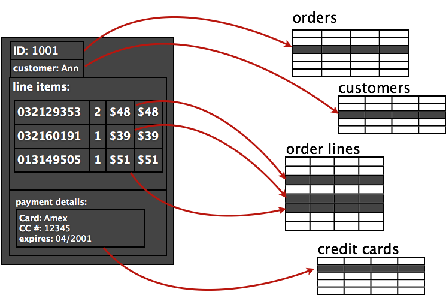
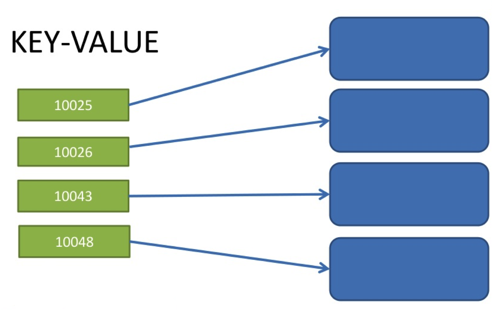

Database Landscape

This presentation is built almost completely from a presentation by Rackspace University
Database Landscape
Tables
Basic data-storage unit in a relational database.Tables consist of columns and rows.
Columns
Specific set of values in a table of the same type. It defines a specific attribute of the table or data.
Rows (records)
Represents a set of data about a specific item
An “Aggregate” is a collection of related objects that we wish to treat as a unit
Primarily constructed of aggregates that have a Key or ID that’s used to access the data.
The database cannot see structure within the aggregate
Redis is a Key/Value database (+ more as you will see)

MongoDB, as we have seen, is a document database
Data can be structured in a couple of different ways
Not a part of this course
Not a part of this course
But Redis is more than just a simple key-value store. Keys can contain "advanced" structures such as:
In Memory
The entire dataset needs to be able to exist in memory on the server to take advantage of the potential speed benefits
Persistence
With respect to persistence, by default, Redis snapshots the database to disk based on how many keys have changed. You configure it so that if X number of keys change, then save the database every Y seconds
Strings are the most basic kind of Redis value. Redis Strings are binary safe, this means that a Redis string can contain any kind of data, for instance a JPEG image or a serialized Ruby object.
Example
set users:leto '{"name": leto, "planet": dune, "likes": ["spice"]}'
get users:leto
Redis Hashes are maps between string fields and string values, so they are the perfect data type to represent objects (eg: A User with a number of fields like name, surname, age, and so forth)
{key:value}
{field1: “A”, field2: “B”...}
In a lot of ways, hashes are like strings. The important difference is that they provide an extra level of indirection: a field. Therefore, the hash equivalents of set and get are:
hset users:goku powerlevel 9000
hget users:goku powerlevel
Lists let you store and manipulate an array of values for a given key. You can add values to the list, get the first or last value and manipulate values at a given index. Lists maintain their order and have efficient index-based operations.
Example: Push a new user at the front of the list, then trim it so that it only contains the last 50 users.
lpush newusers goku
ltrim newusers 0 49
Sets are used to store unique values and provide a number of set-based operations, like unions. Sets aren’t ordered but they provide efficient value-based operations.
{A,B,C,D}
Example: . A friend’s list is the classic example of using a set
sadd friends:leto ghanima paul chani jessica
sadd friends:duncan paul jessica alia
Efficiently tell (O(1)) whether userX is a friend of userY or not:
sismember friends:leto jessica
sismember friends:leto vladimir
Does two or more people share the same friends
sinter friends:leto friends:duncan
The last and most powerful data structure are sorted sets. If hashes are like strings but with fields, then sorted sets are like sets but with a score. The score provides sorting and ranking capabilities

{value:score}
{C:1, D:2, A:3, D:4}
Example: A ranked list of friends
zadd friends:duncan 70 jan 95 paul 95 chani 75 jessica 1 Peter
How many friends does duncan have with a score of 90 or over?
szcount friends:duncan 90 100
Redis allows you to mark a key for expiration. You can give it an absolute time in the form of a Unix timestamp (seconds since January 1, 1970) or a time to live in seconds.
This is a key-based command, so it doesn’t matter what type of data structure the key represents.
expire pages:about 30
expireat pages:about 1356933600
The first command will delete the key (and associated value) after 30 seconds. The second will do the same at 12:00 a.m. December 31st, 2012.

One of the most apparent use cases for Redis is using it as a Session Store.
The advantages of using Redis over other session stores, is that Redis offers persistence
While maintaining a cache isn't typically mission critical with regards to consistency, most users wouldn't exactly enjoy if all their cart sessions went away
This will be our Use Case for Redis in this course
See:
11 Common Web Use Cases Solved In Redis
For additional examples
Redis as a Session Store.